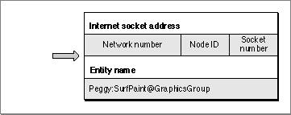
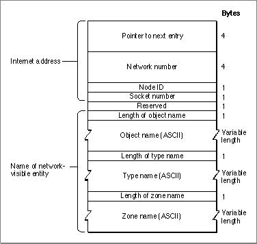

Legacy Document
Important: The information in this document is obsolete and should not be used for new development.
Important: The information in this document is obsolete and should not be used for new development.


Registering Your Entity With NBP
You register your entity with NBP to make its services available to other entities through-
out the network. Once the entity is registered, other entities can look up its name and address pair based on its name or a part of that name.Your process can register itself with several names all associated with the same socket.
To register itself, your entity calls two NBP routines:
- the set names table entry (
NBPSetNTE) procedure, which prepares the names
table entry- the register name (
PRegisterName) function, which provides NBP with a pointer to the names table entry so that NBP can register the entry on the node
Setting Up a Names Table Entry
TheNBPSetNTEprocedure creates a names table entry in the format that Figure 3-4 on page 3-8 shows. You associate an NBP entity name with the socket number assigned to your entity.When you create the names table entry, you provide NBP with the socket number that your entity uses. This is the socket ID that was assigned to your entity when it opened
a socket.Figure 3-3 shows a complete internet socket address belonging to an entity and the entity name that is associated with the address.
Figure 3-3 The internet socket address and entity name of an application

Along with the individual fields of the name and the socket number, you pass
NBPSetNTEa pointer to a buffer that is 108 bytes long. You create a record of typeNamesTableEntryas the buffer to be used for the names table entry. When you
register your entity, NBP uses the buffer that you pass it as the actual names table entry for that entity; it does not make a copy of the buffer. NBP links theNamesTableEntryrecord that you provide to other names table entries on the node to create a names
table for that node. For this reason, memory that you allocate for the buffer must be nonrelocatable.Figure 3-4 shows the structure of the names table entry record.
Notice that the first field in the
NamesTableEntryrecord is a pointer to the next entry in the linked list. NBP maintains the value of this field. You do not supply this value. However, you can get a pointer to the first entry in the names table on the node
where the entity is running by calling thePGetAppleTalkInfofunction. For informa-
tion about thePGetAppleTalkInfofunction, see the chapter "AppleTalk Utilities" in this book.Figure 3-4 Names table entry record format

Registering a Names Table Entry
After you create the names table entry usingNBPSetNTE, you register it by calling thePRegisterNamefunction. When you callPRegisterName, NBP fills in the network number and node ID for the names table entry; because these values are the same for all entities on the node, you do not need to supply them.Before you call the
PRegisterNamefunction, you must supply values for the function's parameter block input fields. These fields areinterval,count,entityPtr, andverifyFlag. If you execute the function asynchronously, you must also supply a value for theioCompletionfield. After you call thePRegisterNamefunction, you must not alter the contents of the parameter block until the function completes execution, and you must not modify or manipulate the names table entry until you remove it from the NBP name and address pair directory.You set the parameter block's
entityPtrfield to the names table entry's pointer. For released software, you should always set theverifyFlagfield to a nonzero number. This directs NBP to check throughout the network to determine that the name you want to register is unique. Ensuring that a name is unique avoids the occurrence of problems that can arise when two entities are registered with the same name. If the entity name is already registered for another entity, thePRegisterNamefunction result indicates that the name is a duplicate by returning a function result ofnbpDuplicate.You can specify how many times NBP should attempt to verify the name's uniqueness by assigning a value to the
countfield. You can control how long NBP waits between each check by assigning a value to theintervalfield.The interval and count parameters are both 1 byte long, which limits them to a value within the range of 0 to 255 ($00-$FF). However, you should not specify a value of 0 (which is equivalent to 256) for the retransmit interval; the task will never be executed if you do.
You measure intervals in 8-tick units. You can use this equation to determine how long in ticks a function will take to complete:
TimeToCompleteInTicks := count * interval * 8;A value of 7 for theintervalfield is usually sufficient (7 8 = 56 ticks equals approxi-
mately 1 second). A retry count of 5 is usually sufficient. However, on a large network, base the interval value on the speed of the network. Base the retry count on how likely it is for a particular kind of device to catch or miss the NBP lookup request and how many devices of this kind are on the network.Some kinds of devices are more likely to receive the NBP lookup request than are others. For example, the AppleTalk ImageWriter has a dedicated processor on the LocalTalk option card to handle AppleTalk processing. A dedicated processor is likely to be available to receive an NBP lookup request, so the count for a device of this type can be relatively low. However, most Macintosh computers and LaserWriter printers depend on the system's shared processor to handle all processing, so the count for these kinds of devices should be higher. On a network with slow connections, for example, one that uses a modem bridge, you should increase the interval.
You can use different values for different types of devices. You can store these values in a preferences resource so that you can easily change them to correspond to changes in the network. For example, you could include values such as the following for these devices:
Device Interval Count AppleShare $07 $05 AppleTalk ImageWriter $07 $02 LaserWriter $0B $05 You pass to the
PRegisterNamefunction a pointer to a parameter block and a Boolean value indicating if the function is to be executed asynchronously or synchronously. If you set theasyncBoolean parameter toTRUE, you must either provide a completion routine or set theioCompletionfield value toNIL, in which case, your process must poll the parameter block'sioResultfield to determine when the function completes the operation. For a discussion of synchronous and asynchronous execution, see the chapter "Introduction to AppleTalk" in this book.Listing 3-1 shows a segment of code that registers an application with NBP. First the code allocates nonrelocatable memory for the names table entry. Then the code calls
NBPSetNTEto set up the names table entry in the format that thePRegisterNamefunction expects.Next, the code assigns values to the input fields of the parameter block to be used for
thePRegisterNamefunction. The code doesn't assign values to the ioRefNum and csCode fields because these field values are filled in by the PRegisterName function's glue code in the MPW interface.Notice that the code assigns to the
entityPtrfield thentePtrpointer to the buffer that the code passed to theNBPSetNTEfunction. After it sets up the parameter block,
the code makes a synchronous call to thePRegisterNamefunction to register the names table entry. If thePRegisterNamefunction returns an error, the code releases
the nonrelocatable memory that it allocated for the names table entry.Listing 3-1 Registering an application with NBP
FUNCTION MyRegisterName (entityObject: Str32; entityType: Str32; socket: Integer; VAR ntePtr: Ptr): OSErr; VAR mppPB: MPPParamBlock; result: OSErr; BEGIN ntePtr := NewPtrSys(sizeof(NamesTableEntry)); IF ntePtr = NIL THEN BEGIN result := MemError; {return memory error} ntePtr := NIL; END ELSE BEGIN {Build the names table entity.} NBPSetNTE(ntePtr, entityObject, entityType, '*', socket); WITH mppPB DO BEGIN interval := $0F; {reasonable values for the } count := $03; { interval and retry count} entityPtr := ntePtr; {pointer to NamesTableEntry} verifyFlag := Byte(TRUE); {ensure that name is unique} END; result := PRegisterName(@mppPB, FALSE);{register the name} IF (result <> noErr) THEN BEGIN DisposPtr(ntePtr); {if error, release memory} ntePtr := NIL; END; END; MyRegisterName := result; END;